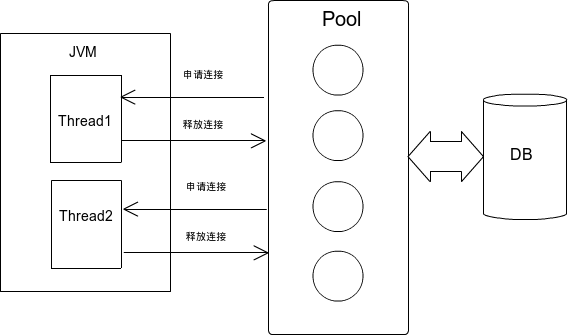
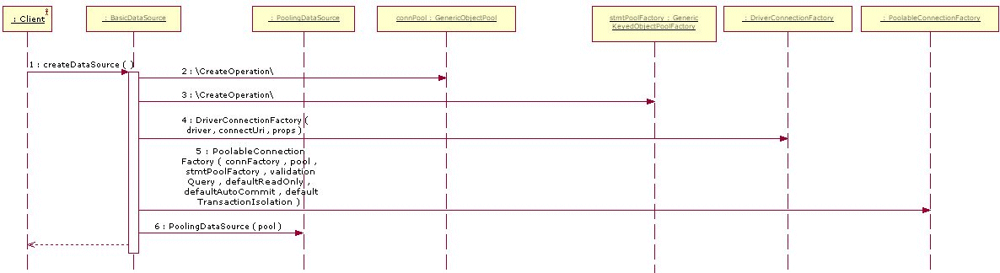
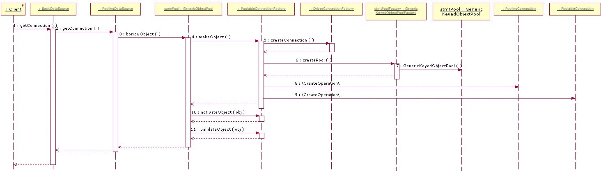
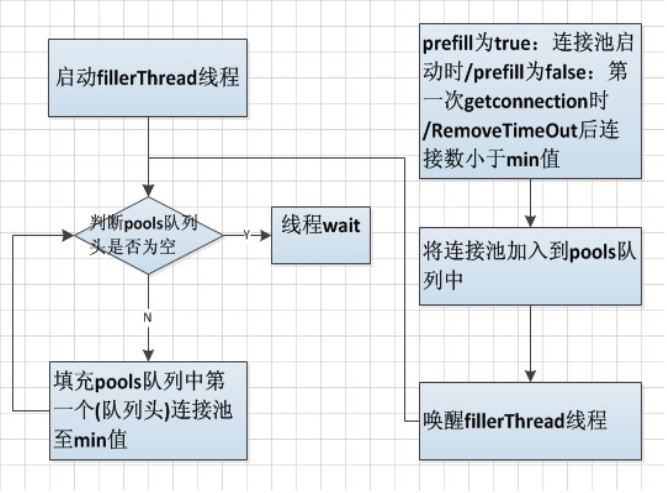
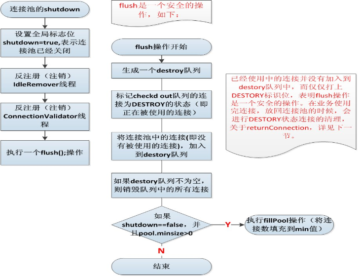
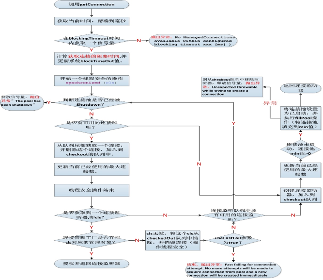
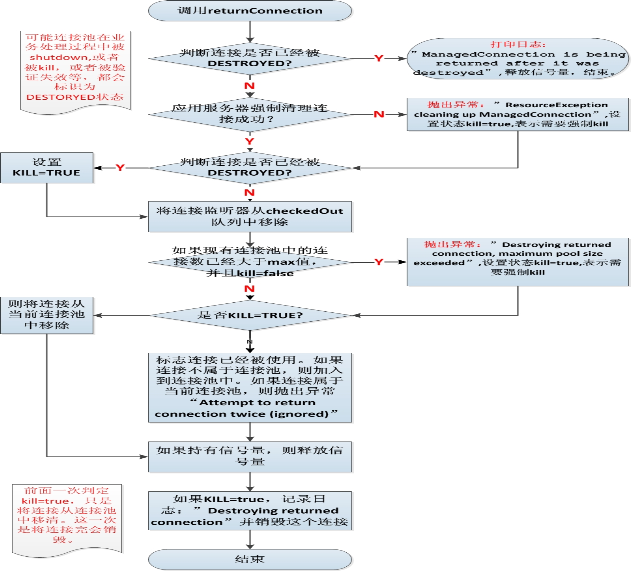

F11
or
⇧⌘F
for fullscreen - Arrow keys
left/right
or
mouse button
to navigate -
Esc
to exit
Github
About
Do it!
This presentation is
saved online
at:
A read-only version for
sharing
is at:
Press
Slidify!
to view presentation
# Heading
- List
--- New slide
Picture
or ...
Enter
picture url:
Insert picture
Cancel
<span class="first"> # 数据库连接池 <span class="author">by tinghe</span> </span> --- # JDBC JAVA数据库连接 \\ try { String url = "jdbc:mysql://localhost:3306/test"; String user = "test"; String password = "xixihaha"; String sql = "SELECT * FROM simperf_result where id=1"; // static register driver Class.forName("com.mysql.jdbc.Driver"); // 连接到数据库 Connection c = DriverManager.getConnection(url, user, password); Statement stmt = c.createStatement(); // 执行SQL查询 ResultSet rs = stmt.executeQuery(sql); ResultSetMetaData rsmd = rs.getMetaData(); while (rs.next()) { System.out.println(StringUtils.toUpperCase(rsmd.getColumnName(1)) + "===" + rs.getObject(1)); } c.close(); } catch (SQLException e) { e.printStackTrace(); } catch (ClassNotFoundException e) { e.printStackTrace(); } \\ - 连接反复打开关闭 - 建立连接时耗时相当严重 - 影响性能 --- # 数据库连接池 - 节省系统资源 - 连接可以被有效共享 - 对数据库连接进行有效管理  --- # 常用的数据库连接池 - C3P0 开源的JDBC连接池，与Hibernate一起发布 - Jakarta DBCP Apache开源项目 - DDConnectionBroker 简单，轻量级 - DBPool 一个高效的易配置的数据库连接池 - BoneCP 号称比C3P0/DBCP连接池快25倍 - DIY - 等等 其中我们常用的有 - Jakarta DBCP - JBoss Connection Pool --- # Jakarta DBCP 数据库连接池 - Jakarta DBCP是Apache的一个开源项目 - 依赖Jakarta commons-pool对象池机制 - 简单易用，通常在开发或测试阶段使用 - 依赖的Jar包：commons-dbcp.jar, commons-pool.jar 在测试中的使用： \\ <bean id="mysqlDataSource" class="org.apache.commons.dbcp.BasicDataSource" destroy-method="close"> <property name="driverClassName"> <value>com.mysql.jdbc.Driver</value> </property> <property name="url"> <value>jdbc:mysql://localhost:3306/test?useUnicode=true&characterEncoding=gbk</value> </property> <property name="maxActive"> <value>25</value> </property> <property name="username"> <value>test</value> </property> <property name="password"> <value>xixihaha</value> </property> </bean> \\ --- # DBCP 的几个重要元素 - BasicDataSource，DBCP中DataSource的实现 -- createDataSource() 初始化 --- 创建GenericObjectPool，对连接进行管理 --- 创建driverConnectionFactory，负责向数据库创建真正的连接 -- getConnection() --- 从GenericObjectPool中获取一个连接 - PoolableConnectionFactory -- makeObject，使用driverConnectionFactory向数据库连接连接 -- activateObject，在getConnection时被调用，设置连接属性，如：autoCommit, transactionIsolation -- destroyObject，销毁一个连接，在连接出问题时调用 - GenericObjectPool -- borrowObject，从连接池中获取一个连接 -- returnObject，向连接池中归还一个连接 --- # 获取连接 getConnection() -> borrowObject 如果池中没有活动的连接时： - 还没有达到最大连接数时自动创建 - 已经达到最大连接数时，有三种策略 -- WHEN_EXHAUSTED_GROW 自动增加连接 -> PoolableConnectionFactory.makeObject() -- WHEN_EXHAUSTED_FAIL 直接失败 -- WHEN_EXHAUSTED_BLOCK 堵塞 对获取到的Connection进行activateObject激活操作 \\ try { /** * dbcp 1.2.1 与 1.4有一些区别，1.4不一定会进行conn.setAutoCommit， * 所以getConnection时可能获取一个坏连接，1.2.1会进行setAutoCommit，产生异常后重新取连接 * 如果此时Connection已经关闭，则会抛出数据库读写异常 */ _factory.activateObject(); // => conn.setAutoCommit(_defaultAutoCommit) } cache { // 如果产生异常，说明该连接不可用，则将当前连接关闭并重新获取下一个连接，此时_pool里面移除了一个不可用连接 _factory.destroyObject(pair.value); => _conn.close(); // code ... // 尝试获取下一个连接 } \\ --- # 关闭连接 poolableConnection.close() -> returnObject - 先确认连接是否关闭 -- 连接已关闭时不向池中归还连接 -- 连接正常时，向池中归还连接 向BasicDataBase请求3个连接，再将连接关闭后，netstat可以看到TCP连接： \\ tcp6 0 0 127.0.0.1:39445 127.0.0.1:3306 ESTABLISHED 19824/java tcp6 0 0 127.0.0.1:39441 127.0.0.1:3306 ESTABLISHED 19824/java tcp6 0 0 127.0.0.1:39444 127.0.0.1:3306 ESTABLISHED 19824/java \\ BasicDataBase的一些设置： <table border="0" cellpadding="10" cellspacing="10"><tr><td>username</td><td>传递给JDBC驱动的用于建立连接的用户名</td></tr> <tr> <td>password</td><td>传递给JDBC驱动的用于建立连接的密码<td> </tr><tr> <td>url</td><td>传递给JDBC驱动的用于建立连接的URL</td> </tr><tr> <td>driverClassName</td><td>使用的JDBC驱动的完整有效的java 类名</td> </tr><tr> <td>initialSize</td><td>0, 初始化连接:连接池启动时创建的初始化连接数量,1.2版本后支持</td> </tr><tr> <td>maxActive</td><td>8, 最大活动连接:连接池在同一时间能够分配的最大活动连接的数量, 如果设置为非正数则表示不限制</td> </tr><tr> <td>maxIdle</td><td>8, 最大空闲连接:连接池中容许保持空闲状态的最大连接数量,超过的空闲连接将被释放,如果设置为负数表示不限制,归还连接时校验</td> </tr><tr> <td>minIdle</td><td>0, 最小空闲连接:连接池中容许保持空闲状态的最小连接数量,低于这个数量将创建新的连接,如果设置为0则不创建</td> </tr><tr> <td>maxWait</td><td>无限, 最大等待时间:当没有可用连接时,连接池等待连接被归还的最大时间(以毫秒计数),超过时间则抛出异常,如果设置为-1表示无限等待</td> </tr> </table> --- # 序列图-createDataSource  --- # 序列图-getConnection  --- # DBCP Pool - org.apache.commons.pool.impl.GenericObjectPool - 数据结构：LinkedList - 获取连接时使用 removeFirst() - 归还连接时使用 addLast() - 连接循环使用 <a href="sample/dbcp-pool.html?dbcp" target="_blank">演示</a> --- # JBoss 连接池 JBossManagedConnectionPool 是一个比较复杂的池管理 - 核心数据结构是ArrayList - 取链接时从链表的尾部取出一个，remove(size-1) - 放回链接是加到链表尾部，add() - Pool存放在InternalManagedConnectionPool.connectionListeners - prefill预先建立连接 -- prefill=true, 在LocalTxDataSource.start时建立连接，达到minSize -- prefill=false, 在第一次getConnection时建立连接，达到minSize - 在getConnection时不检查连接 - 在每个connection与Statement, ResultSet的方法里进行异常捕获，并进行异常处理与连接 - 只要与Server有通信的操作，就应该进行try-cache,进行连接检查 <a href="sample/dbcp-pool.html?jboss" target="_blank">演示</a> --- # JBoss new 一个连接池 \\ //连接池MAX连接数 this.maxSize = this.poolParams.maxSize; //可以使用的连接事件监听器初始化。 cls = new ArrayList(this.maxSize); /*创建一个对应连接事件监听器的信号集，用于连接的获取。 每次获取连接或者创建连接之前，都需要获取信号量， 当没有可用的信号量时，表示连接已经到达max值。 */ permits = new FIFOSemaphore(this.maxSize); /* 判断jboss配置文件中的prefill设置，默认为false。 如果设置为true，则将本连接池加入到一个临时pool(LinkedList)的最后, 加入的方式是串行的(线程安全)。 */ if(poolParams.prefill) { //fillPool执行了一个fillToMin的方法，即将连接池中的连接，填充到min值。 PoolFiller.fillPool(this); } \\ --- # fillerThread线程 PoolFiller在构造函数中即完成fillerThread线程的启动: - pools是一个任务队列  - 执行fillToMin的几个场景： -- prefill设置为true，启动时。 (prefill这个参数在jboss4.0.5版本以后才能够被支持) -- prefill为false,第一次getconnetion的时。 -- 在IdleRemoveTimeout后，马上执行fillToMin(减少内存的开销) -- 在valitionconnection后，马上执行fillToMin --- # 连接池的初始化 - 将连接池注册到IdleRemover线程和ConnectionValidator线程中 \\ protected void initialize() { //将一个连接池对象注册到IdleRemover线程中，表示这个连接池使用IdleRemover来进行管理。IdleRemover线程是空闲连接清理线程，被唤醒的周期是poolParams.idleTimeout/2。即配置的idle-timeout-minutes参数/2。默认idle-timeout-minutes为30分钟，所以清理线程是15分钟运行一次。 if (poolParams.idleTimeout != 0) IdleRemover.registerPool(this, poolParams.idleTimeout); //将一个连接池对象注册到ConnectionValidator线程中,表示这个连接池使用ConnectionValidator来进行管理。IdleRemover线程是一个验证连接池的线程，被唤醒的周期是poolParams.backgroundValidation/2。即配置的background-validation-millis 参数/2。默认background-validation-millis为10分钟，所以验证线程是5分钟运行一次。 if (poolParams.backgroundValidation) { ConnectionValidator.registerPool(this, poolParams.backgroundInterval); } } \\ --- # 清理线程和验证线程 - IdleRemover 和 ConnectionValidator,两个线程是基于容器存在的,管理容器中的所有连接池，两个线程的管理及实现方式基本是一致的。 - IdleRemover默认是30分钟清理一次空闲的连接。 - ConnectionValidator默认是10分钟进行一次连接验证。 - IdleRemover是synchronized的, InternalManagedConnectionPool.removeTimedOut() - ConnectionValidator是非synchronized, InternalManagedConnectionPool.validateConnections() -- OracleValidConnectionChecker => pingDatabase - SofaChecker连接对应的线程退出后，该连接归还，公司添加的一个验证器 --- # 连接池的关闭 - flush()函数清理所有的连接,主要包括： -- checkd out队列（已经被使用）中的连接。 -- 空闲的队列的连接。  空闲的队列的连接监听进行直接销毁，而checkd out队列的连接设置为DESTROY状态，并没有进行销毁，为什么呢？ 我们在returnConnection方法中可以看以看到会对DESTROY状态的连接进行清理。 --- # getConnection流程 - 新建的连接不会放到连接池中，使用完返回 时放到队列尾。 - 在第一次getConnection时，会执行fillToMin - blocking-timeout-millis 是一个获取信号量的超时时间，如果不能够获取到信号量（连接），则jboss会抛出异常“can not get connection”。 - 信号量一共有MAX值个,只要当前正在使用的连接数没有到达MAX值，这个信号量一定能够被获取到。 - 业务在使用连接的过程中，会一直占有这个信号量，在returnConnection或者发生异常时释放信号量。 - <use-fast-fail> - 当从连接池中获取连接失败时，是否继续去获取一个新的连接。 这个参数是为了解决SQL校验需要花费大量时间的问题，默认值为 false。（保证业务成功，不需要用sql验证来保证连接是可用的）  --- # returnConnection流程 - 释放连接是一个线程安全的操作。 -- 在连接return时，有可能已经是destory的状态，这时，直接进行remove即可。 -- 释放连接需要释放信号量。  --- # 异常连接销毁 - 默认情况下，JBOSS不会对无效的连接进行销毁。 - 对异常列表中的连接进行销毁需要配置 \\ <!-- 当数据库异常发生时，这个类决定是否需要销毁数据库连接 --> <exception-sorter-class-name>org.jboss.resource.adapter.jdbc.vendor.OracleExceptionSorter</exception-sorter-class-name> \\ - 在zdatasource中 --- # MySQLExceptionSorter \\ public class MySQLExceptionSorter implements ExceptionSorter, Serializable { public boolean isExceptionFatal(SQLException e) { final int error_code = Math.abs(e.getErrorCode()); if (e.getSQLState() != null) { // per Mark Matthews at MySQL if (e.getSQLState().startsWith("08") || e.getSQLState().startsWith("01")) { return true; } } switch (error_code) { // Communications Errors case 1040: // ER_CON_COUNT_ERROR case 1042: // ER_BAD_HOST_ERROR case 1043: // ER_HANDSHAKE_ERROR case 1047: // ER_UNKNOWN_COM_ERROR case 1081: // ER_IPSOCK_ERROR case 1129: // ER_HOST_IS_BLOCKED case 1130: // ER_HOST_NOT_PRIVILEGED // Authentication Errors case 1045: // ER_ACCESS_DENIED_ERROR // Resource errors case 1004: // ER_CANT_CREATE_FILE case 1005: // ER_CANT_CREATE_TABLE case 1015: // ER_CANT_LOCK case 1021: // ER_DISK_FULL case 1041: // ER_OUT_OF_RESOURCES // Out-of-memory errors case 1037: // ER_OUTOFMEMORY case 1038: // ER_OUT_OF_SORTMEMORY return true; } final String error_text = (e.getMessage()).toUpperCase(); if (error_code == 0 && (error_text.indexOf("COMMUNICATIONS LINK FAILURE") > -1 || error_text .indexOf("COULD NOT CREATE CONNECTION") > -1)) {// errorCode忽略并且异常信息为连接出错 return true; } return false; } } \\ --- # OracleExceptionSorter \\ public class OracleExceptionSorter implements ExceptionSorter, Serializable { public boolean isExceptionFatal(final SQLException e) { final int error_code = Math.abs(e.getErrorCode()); // I can't remember if the errors are negative or positive. if ((error_code == 28) //session has been killed || (error_code == 600) //Internal oracle error || (error_code == 1012) //not logged on || (error_code == 1014) //Oracle shutdown in progress || (error_code == 1033) //Oracle initialization or shutdown in progress || (error_code == 1034) //Oracle not available || (error_code == 1035) //ORACLE only available to users with RESTRICTED SESSION privilege || (error_code == 1089) //immediate shutdown in progress - no operations are permitted || (error_code == 1090) //shutdown in progress - connection is not permitted || (error_code == 1092) //ORACLE instance terminated. Disconnection forced || (error_code == 1094) //ALTER DATABASE CLOSE in progress. Connections not permitted || (error_code == 2396) //exceeded maximum idle time, please connect again || (error_code == 3106) //fatal two-task communication protocol error || (error_code == 3111) //break received on communication channel || (error_code == 3113) //end-of-file on communication channel || (error_code == 3114) //not connected to ORACLE || (error_code >= 12100 && error_code <= 12299) // TNS issues || (error_code == 17002) //connection reset || (error_code == 17008)) //connection closed { return true; } final String error_text = (e.getMessage()).toUpperCase(); // Exclude oracle user defined error codes (20000 through 20999) from consideration when looking for certain strings. if ((error_code < 20000 || error_code >= 21000) && ((error_text.indexOf("SOCKET") > -1) //for control socket error || (error_text.indexOf("CONNECTION HAS ALREADY BEEN CLOSED") > -1) || (error_text.indexOf("BROKEN PIPE") > -1) || (error_text.indexOf("COULD NOT CREATE CONNECTION") > -1) || error_text .indexOf("NO DATASOURCE") > -1) || error_text.indexOf("NO ALIVE DATASOURCE") > -1) { return true; } return false; } } \\ --- # 一个配置引发的事故 消息中心使用zdatasource - 没有配置ExceptionSort, 在有异常情况下，不会移除坏连接，导致坏连接反复被获取, 以前很多应用都是不配置的 \\ // checkException(t) // 进行连接异常处理，会将异常的连接踢除掉 // 根据ExceptionSort（根据错误码返回boolean）决定是否处理异常 if (t instanceof SQLException == false || mcf.isExceptionFatal((SQLException) t)) broadcastConnectionError(t); \\ - setTransactionIsolation 与Server端有交互操作,没有设置try-cache对异常进行处理,异常向上抛出后，直接进入JDBCTemplate中的conn.close(),这时将一个坏的连接还到了连接池中。 \\ public Statement createStatement() throws SQLException { checkTransaction(); try { return new WrappedStatement(this, mc.getConnection().createStatement(), dataSource.getDataSourceName()); } catch (Throwable t) { throw checkException(t); // 发生异常时踢除坏连接 } } // 没有捕获异常 public void setTransactionIsolation(int isolationLevel) throws SQLException { checkStatus(); mc.setJdbcTransactionIsolation(isolationLevel); } \\ --- # 交互异常 - com.mysql.jdbc.CommunicationsException is subclass of SQLException - 使用JDBC Driver与数据库Server进行交互时抛出异常 - 数据库重启，网络断开，连接超时 \\ com.mysql.jdbc.CommunicationsException: Communications link failure due to underlying exception: ** BEGIN NESTED EXCEPTION ** STACKTRACE: java.io.EOFException at com.mysql.jdbc.MysqlIO.readFully(MysqlIO.java:1913) at com.mysql.jdbc.MysqlIO.reuseAndReadPacket(MysqlIO.java:2304) at com.mysql.jdbc.MysqlIO.checkErrorPacket(MysqlIO.java:2803) at com.mysql.jdbc.MysqlIO.sendCommand(MysqlIO.java:1573) at com.mysql.jdbc.MysqlIO.sqlQueryDirect(MysqlIO.java:1665) at com.mysql.jdbc.Connection.execSQL(Connection.java:3170) at com.mysql.jdbc.Connection.setTransactionIsolation(Connection.java:5571) at com.alipay.zdatasource.resource.adapter.jdbc.BaseWrapperManagedConnection.setJdbcTransactionIsolation(BaseWrapperManagedConnection.java:452) at com.alipay.zdatasource.resource.adapter.jdbc.WrappedConnection.setTransactionIsolation(WrappedConnection.java:364) at com.alipay.ats.util.test.DBUtilsTest.testJBossDS(DBUtilsTest.java:110) at com.alipay.ats.util.test.DBUtilsTest.main(DBUtilsTest.java:135) ** END NESTED EXCEPTION ** Last packet sent to the server was 42 ms ago. \\ --- # 练一练 一个应用系统向DB中不断插入数据，使用JBoss配置如下，启动应用后，先向数据库中插入10条数据，此时，数据库故障重启。问：应用继续向数据库中插入数据会报多少次错误？ \\ <local-tx-datasource> <!-- 数据源的JNDI名字，由于数据源对象只在同一JVM中有效，因此系统会为它增加java:/前缀 --> <jndi-name>DataSource-Oracle</jndi-name> <!-- JDBC连接URL --> <connection-url>jdbc:oracle:oci:@devdb01</connection-url> <connection-property name="SetBigStringTryClob">true</connection-property> <connection-property name="defaultRowPrefetch">50</connection-property> <!-- JDBC驱动类 --> <driver-class>oracle.jdbc.OracleDriver</driver-class> <security-domain>EncryptDBPasswordOracle</security-domain> <!-- The minimum connections in a pool/sub-pool. Pools are lazily constructed on first use --> <min-pool-size>9</min-pool-size> <!-- The maximum connections in a pool/sub-pool --> <max-pool-size>15</max-pool-size> <prefill>false</prefill> <set-tx-query-timeout>false</set-tx-query-timeout> <track-statements>false</track-statements> <validate-on-match>false</validate-on-match> <use-fast-fail>false</use-fast-fail> <share-prepared-statements>false</share-prepared-statements> <check-valid-connection-sql>SELECT 1 from dual</check-valid-connection-sql> <transaction-isolation>TRANSACTION_READ_COMMITTED</transaction-isolation> <background-validation-minutes>10</background-validation-minutes> <background-validation>false</background-validation> <valid-connection-checker-class-name>com.alipay.zdatasource.resource.adapter.jdbc.vendor.OracleValidConnectionChecker</valid-connection-checker-class-name> <exception-sorter-class-name>com.alipay.zdatasource.resource.adapter.jdbc.vendor.OracleExceptionSorter</exception-sorter-class-name> <prepared-statement-cache-size>100</prepared-statement-cache-size> <query-timeout>180</query-timeout> <!-- The time before an unused connection is destroyed --> <!-- NOTE: This is the check period. It will be destroyed somewhere between 1x and 2x this timeout after last use --> <idle-timeout-minutes>30</idle-timeout-minutes> <!-- 取不到连接的超时时间 --> <blocking-timeout-millis>2000</blocking-timeout-millis> </local-tx-datasource> \\
Theme:
White
Black
Save
New